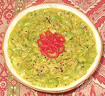

|
Luffa GourdIndia - Jhinge Posto | ||||
| Serves: Effort: Sched: DoAhead: |
4 side ** 55 min Yes |
A light and delicate gourd dish that isn't at all mushy as squash might be. Excellent as a side for both Indian and Western dishes. | |||
|
2 1/2 3/4 2 1/2 2 1/2 4 |
# t t T t T |
Angled Luffa (1) Turmeric Salt Poppy Seeds (2) Chili Serrano (3) Red Chili dry (4) Nigella (Kalonji) Oil |
PREP - (25 min)
|